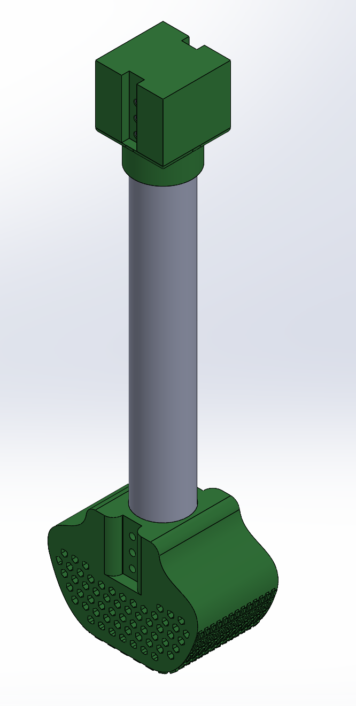
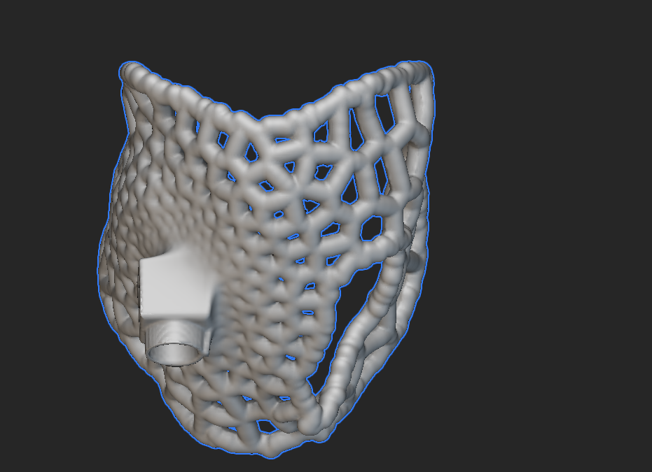

Yana Case Study¶
- Age: 7
- Weight: 75 lbs
- Prosthetic: Full limb, front right
- Amputation: Full
- Reason: Post-synovial sarcoma
- Goals: Improved mobility and joint support
Brief Summary of Animal Goals¶
Yana is a 7-year-old German Shepherd who had post-synovial sarcoma (a malignant soft tissue cancer), leading to a full front-right limb amputation. Our primary goals were to build a full-limb prosthetic that can support her 75-lb frame, protect her joints, enhance her mobility, and — at the request of Yana's owner — add a harness handle. Since she is a heavier dog with a high activity level, our team wanted a prosthetic that distributes her weight evenly across her chest and back, preventing sore spots from developing with repeated use.
Materials¶
TPU was used for the harness body and paw due to its flexibility, impact resistance, and shock absorption. TPU is very flexible and can deform a bit without breaking, making it ideal for Yana since she is 75 lbs. It is also waterproof and very durable outdoors, which is what this prosthetic is meant for. Additionally, the lattice TPU harness helps distribute forces more evenly across the torso while remaining lightweight, breathable, and comfortable for Yana.
3D-Print Files¶
All print files are available in the project's shared file folder.
Iteration in Design Process and Challenges Faced¶
Our first challenge was finding an alternative material for the carbon fiber tube. Carbon fiber was expensive and difficult to cut, so we switched the leg material to an aluminum tube. The aluminum tube was much cheaper, easier to cut to the desired length, and as stable as the carbon fiber tube.
We also faced trouble deciding how to attach the harness to Yana. Comparing existing prosthetics and studies, we found the best approach was a velcro interlooping system: the velcro passes through a buckle on the opposite side of its origin and then attaches to itself. This prevents the harness from shifting and makes it easier for Yana's owner to take the prosthetic on and off.
During our first fitting session with the prototype harness, we discovered that — because Yana is a large dog — her harness had to be printed in two parts. We hadn't expected this, so after the fitting we created protrusions on one side of the harness that insert into indentations on the other side, secured with glue for greater stability. We also found we needed to smooth out the edges of the harness and enlarge the hole for her front left paw. These fixes were made in Meshmixer and nTop.
Assembly of Full Design¶
The full design assembles from four parts: harness, forelimb, coupling, and paw.
- Paw — The base support component. Uses a parametric lattice to tune the structure's compressive potential, with a textured surface around the paw. Easy to mount and unmount, but stable while on thanks to over-specced M4 mounting bolt positions. Optimal setup and ideal curvature are still to be determined.
- Forelimb — The leg uses an off-the-shelf aluminum tube.
- Coupling — Square geometry as a placeholder for harness integration. A split shaft-collar mechanism removes clearance along the horizontal axis, with bolting positions for added stability. A full TPU component with a slot for ease of assembly and negligible manufacturing complications.
- Harness — A lightweight, flexible lattice-structure harness body with an integrated mounting feature where the coupling/connector attaches.


Referenced Papers/Sources¶
- Voss, K.; Wiestner, T.; Galeandro, L.; Hässig, M.; Montavon, P. M. (2011). Effect of dog breed and body conformation on vertical ground reaction forces, impulses, and stance times.
- Tuchpramuk, P.; Kaenkangploo, D.; Srithunyarat, T.; Seesupa, S.; Hoisang, S.; Lascelles, B. D. X.; Kampa, N. (2025). Force Plate Gait Analysis in Dogs After Femoral Head and Neck Excision.
- 3D Pets Prosthetics — prosthetics resources